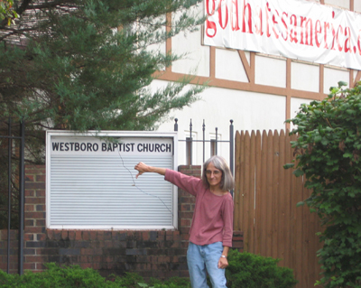

If anyone bothers to ask me what I photograph, my standard answer is, "I take pictures of weeds." It's a cheeky reply, and intentionally a little off-putting. And it's true. I take pictures of weeds. I like weeds: common, small, negligible, despised, random, ubiquitous, living in the cracks of civilization. I identify with them. I love them, even.
Raytheon is not a weed. It is a corporation, a defense contractor, and the world's largest producer of guided missiles. Until a few years ago there was a branch of Raytheon three blocks from my house, giving me ample opportunity to contemplate the ironies of its name: Raytheon, the light of God.
DK has been an ardent proponent of diversification of my subject matter.
Industrial wastes, he whispers, seductively. He knows me well. And, last week, when he reported that the demolition of Raytheon was in its last stages, I could not resist. I grabbed the D70, threw on an unaccustomed, ancient Tamron 28-300mm f3.5-6.3 zoom, and headed down Willow street toward the action.
I like Willow Street. It has no willow trees, but it does have a little market with a bracing red sign,

a decent and colorfully painted Chinese Restaurant -- The Three Fortunes --

and a house with a magnificent mansard roof.

I turned onto Grove Street, past the recently-shuttered Standard Thomson plant, a company that makes automobile thermostats. Times are hard. Companies are downsizing, and people are getting RIF'ed. Ever heard that peppy acronym ? Ever heard it used as a verb ? I have. It means "Reduction In Force" AKA shitcanned. Frankly, I prefer shitcanned. Swallowed up, digested -- all possible usefulness extracted -- then excreted. Into the shit can.
Feeling gloomy, I headed past the Fisheye of God toward the Light of God. I hadn't been paying much attention to the demolition. Only a week ago I'd noticed that the
Raytheon skyboxes were gone. I felt a pang of loss. I should have been paying more attention. Things slip quietly away, and then are gone. I'd imagined them as hermitages for stylites; I'm sure they were far more fell in purpose, something to do with testing bombsights or radar.

I was not prepared for the vistas of destruction that awaited me on Seyon Street. The sky was cooperating, doing a little post-apocalyptic turn. Fascination replaced gloom, at least for the time being.

The pleasure was visual, mechanical; I admit that there was a frisson of glee at seeing the mother of bombs looking much like she had fallen prey to her own progeny. Entirely irrational, to be sure. Missiles were undoubtedly rolling off some other assembly line somewhere, abetted by folks yet-unRIF'ed, folks with kids to feed, missiles destined

to reply to missiles rolling off a distant assembly line tended by other folks with kids to feed, while ideologies grind on in more rarified stratospheres.

There had been a bit of a NIMBY stir a few years back when a developer had proposed building a massive big-box hardware chain store on site. We'd wondered until recently what had become of that controversy. Ours is not one of those toney neighborhoods that easily resists development. In neighborhoods like ours, money talks then walks right in, sits right down, and starts chewing. Triple the traffic ? The litter ? The noise ? the light ? No problemo ! What's a few squished kids in face of the progress of commerce ? Who said human sacrifice was passe ? The gods are ALWAYS hungry.

It came out this week that Big Box Hardware is not coming. The same developer will grace our fair neighborhood with, of all things, an entity called "BJ's Wholesale Club."

The idea of having to PAY to pay to shop at a store has always seemed strange to me. I have only been to such an establishment once, many years ago, with my late mother-in-law in Topeka. She was a shopper's shopper, and a card carrying member of the "Hypermart" -- which has since become a Walmart -- and we accompanied her on some shopping expedition. I must say there are worse things in Topeka -- Fred Phelps' Westboro Baptist Church comes to mind -- but Hypermart was down there.

And now that Hypermart-By-Any-Other-Name has stalked me, found me and followed me to Waltham --

-- can Fred Phelps be far behind ? After all, I took it to a personal level with Fred on one of our Kansas trips. I did stop short of mooning him, thanks the presence of aforementioned Mother-In-Law in the car as DK took my otherwise cheeky picture. (In interest of full disclosure, I have NOT reposted or linked to the photo in which I am deploying a somewhat different finger -- oh, alright,
fingers -- in front of Fred's "church".)

In any case, BJ's is coming to Wally, to my neighborhood, a big, bloated consumerist hyper-emporium of mass quantities of everything, replacing a hyper-emporium of mass quantities of guided missiles.

I sighed and kept snapping pictures of vistas of destruction.

I told myself: Self, people need jobs, and 5-gallon vats of marshmallow fluff are kinder (or at least more slowly destructive)to the human body than a guided missile.

But as I looked at the crumbling shell of the factory -- the place of making -- I couldn't help feeling that I was witnessing, at least in theory, a devolution.

Consider, if you will, the analogy: Westboro Baptist Church is to Christianity as Raytheon is to factory.

I don't pretend to understand the complexities of trade, geopolitics and economics. Deep at the heart of that nexus is exploitation, the idea that people are expendable cogs in the money-making machine. When we hear examples to the contrary -- Aaron Feuerstein paying his workers for years after a fire destroyed the Polartec factory in Methuen, or Salem's Ronald Lappin personally replenishing his workers' pension fund when the Madoff scam drained it-- we are stunned. These men, both deeply religious, were acting out of a profound moral obligation to their workers, their fellow humans.

I came to the end of Seyon Street and headed back toward Willow. I would miss the visual appeal of Raytheon's serrated roof and skyboxes. BJ's would undoubtedly be a big square utilitarian box, one among thousands, grating to eye and soul.

I looked down. There it was: grass, the UR-weed, the comforting blanket, the disconcerting metaphor for our lives. I smiled at it through the chain link. It would prevail.
And that was something.